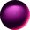
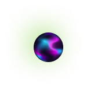
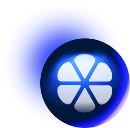
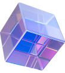
폴카닷 & 쿠사마 생태계 최초 커뮤니티 참여형 Eco-map 소개
폴카닷은 어떤 블록체인인가요? 2022년 3분기에 주요 언론 매체, 팟캐스트및 투자조언 플랫폼 에서 이와 같은 질문들이 쏟아졌었습니다. Nominated Proof-of-Stake(NPoS) 합의알고리즘을 통한 레이어-0 샤딩 프로토콜 설계는 Polkadot과 Kusama가 블록체인 산업에서 줄곧 겪어왔던 ‘트릴레마’를 해결하고, 걱정 없이 분산형 앱(DApps)을 실행 가능토록 설계됐습니다.
끊임없이 확장되는 Polkadot과 Kusama 생태계의 전체 도면을 제공하기 위해 SubWallet은 Parity Technologies의 지원으로 25개 범주에 걸쳐 500개 이상의 프로젝트를 다루는 최초의 커뮤니티 참여형 Polkadot 및 Kusama 생태계 지도를 구축했습니다. DeFi, SocialFi, Identity, NFT Marketplaces, Metaverse, 게임에서 Bridge, 인프라, 스마트 계약, 도구, 데이터 및 개인 정보 보호 솔루션에 이르기까지, 2022년 3분기에 Polkadot 및 Kusama 생태계는 다양한 활동들로 인해 분주했고 ‘trustless’로 가득 차왔습니다.
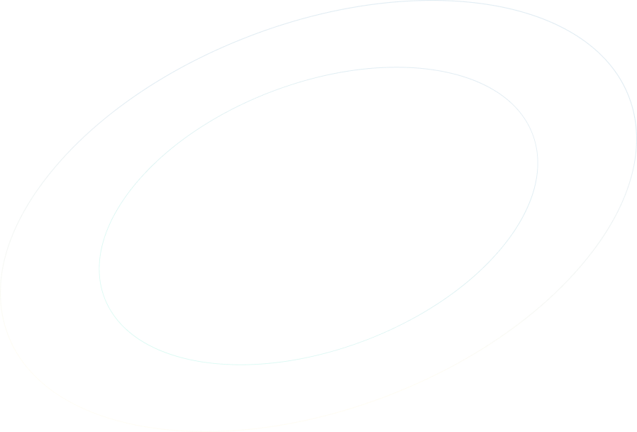
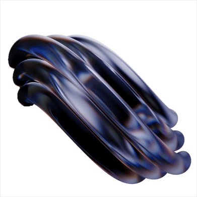
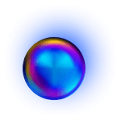

생태계 요약
재정 상태 및 개발 현황
암호화폐 시장의 겨울은 2022년 3분기부터 본격적으로 계속되어왔지만 폴카닷은 언제나 그렇듯 멈춘적이 없습니다. 7월 1일 $7.05의 공개 가격으로 DOT는 계속 상승세를 이어갔고 8월 13일 $10.28B의 시가 총액과 함께 $9.66로 정점을 찍었습니다. 그러나 축소된 YTD 수치는 이전 2분기에 비해 3분기 실적이 더 약함을 보여주고 있습니다. 9월 21일 DOT은 시가총액 68억 9000만 달러로 연초 대비 75.60% 하락한 600만 달러를 기록했습니다.
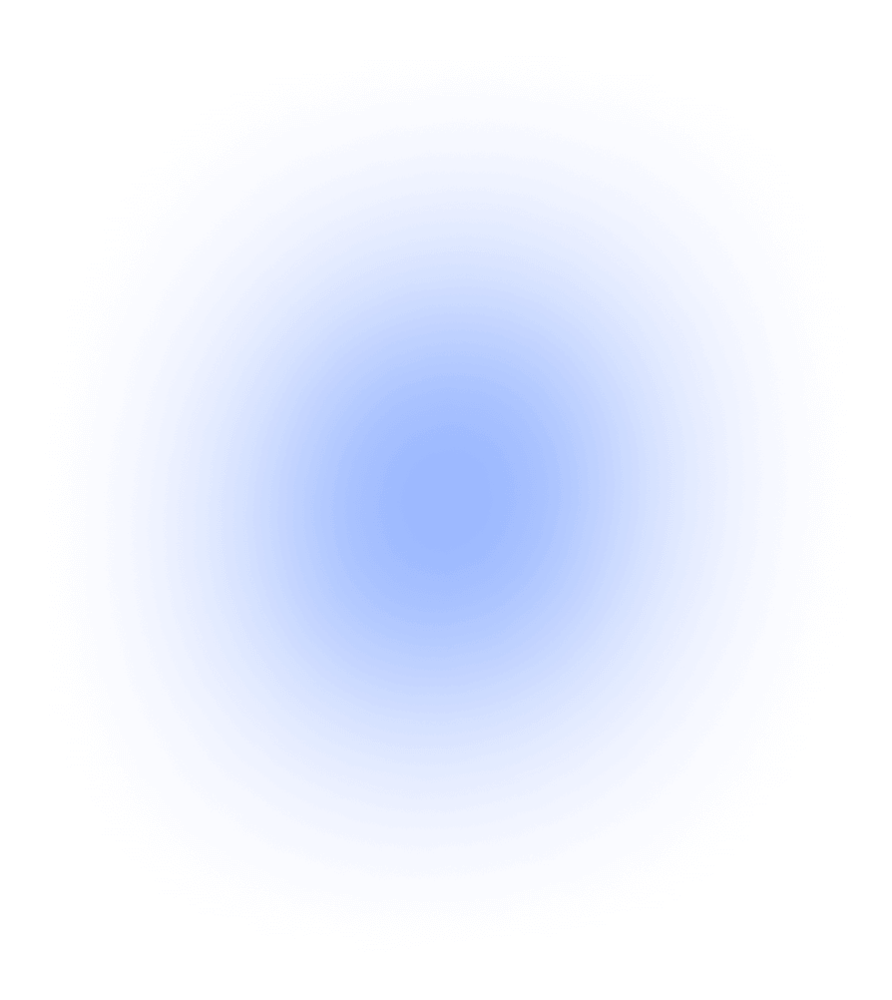
토큰 가격 vs. 개발 활동
8월 10일 시가 총액이 105억 1000만 달러로 급증하면서 Polkadot은 시가 총액 순위에서 Dogecoin보다 높았지만, 3분기 후반부터 전체 암호화폐 시장의 급락으로 Polkadot은 다시 Dogecoin에 밀려서 현재 시가 총액 기준 11위에 올라와 있습니다.
KSM 가격은 7월 22일 DOT보다 일찍 최고점인 $69.60에 도달했지만 급락하여 9월 19일 $37.77까지 하락하여 시가총액 $339.65M을 기록했습니다. 다시 말해, KSM 가격과 시가총액 패턴은 DOT와 비교적 유사했습니다.
개발 활동 비교
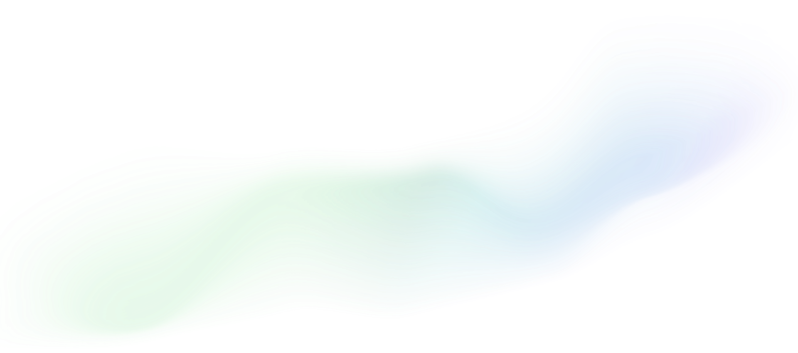
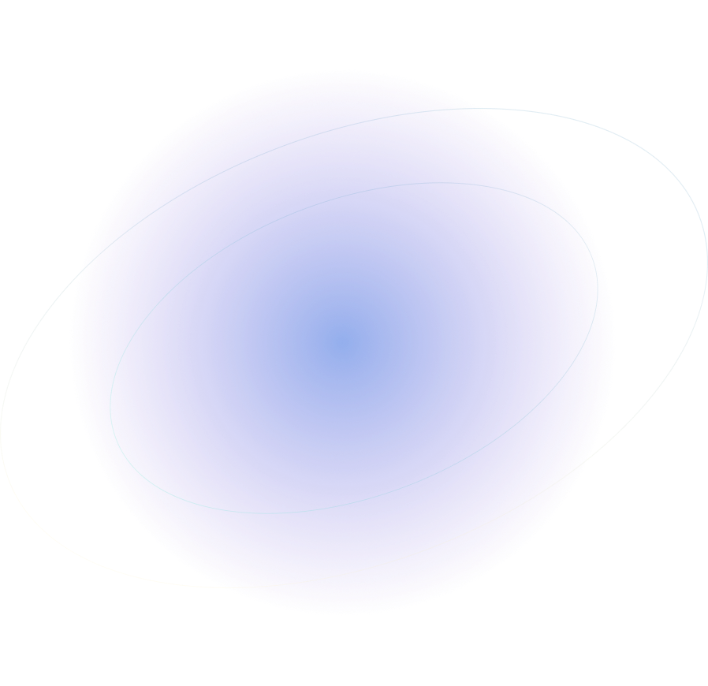
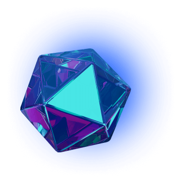
30일 개발 활동 기준 상위 10개 네트워크
| # | 프로젝트 | 개발 활동 |
|---|---|---|
| 1 |
Polkadot
DOT
|
494.93 |
| 2 |
Kusama
KSM
|
494.93 |
| 3 |
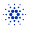Cardano
ADA
|
429.23 |
| 4 |
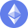Etherum
ETH
|
386.47 |
| 5 |
Status
SNT
|
347.87 |
| 6 |
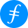Filecoin
FIL
|
314 |
| 7 |
IOTA
MIOTA
|
301.33 |
| 8 |
Cosmos
ATOM
|
300.5 |
| 9 |
Decentraland
MANA
|
295.7 |
| 10 |
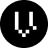Vega Protocol
VEGA
|
286.57 |
토큰 가격은 계속 하락했지만 Polkadot의 개발 활동은 급증했습니다. Santiment기관은 커밋 푸시, 깃헙풀 요청 생성 및 병합, 새 버전 릴리스와 같이 프로젝트가 공용 Github 리포지토리에서 발생되는 빌드 관련 이벤트 수를 비교수치로 개발 활동 을 측정합니다. Polkadot의 개발 활동이 2분기 및 1분기, 특히 9월에 비해 3분기에 어떻게 유의미하고 일관되게 활발했는지 쉽게 알아챌 수 있을 것입니다. Polkadot의 개발 활동 인덱스는 Ethereum, Solana, Near 및 Polygon을 가볍게 능가했으며, 대부분의 경우 Cardano에 이어 2위를 차지했습니다.
Polkadot의 전반적인 개발 활동은 Cardano보다 낮았지만 패턴은 더 일관돼왔습니다. 9월 1일부터 9월 20일까지 Polkadot은 Cardano의 개발 활동 인덱스를 뛰어 넘었으며, 9월 내내 Santiment의 30일 개발 활동 순위에서 Polkadot과 Kusama의 지속적인 우위가 계속돼왔습니다.

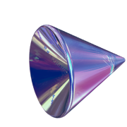
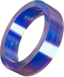
탈중앙성 및 보안성
Ultimate Money가 7월 25일에 발표한 주요 네트워크의 탈중앙화
실태를 조사한
보고서
에 따르면, Polkadot의 Nakamoto 계수는 조사된 레이어 1보다 큰
차이로 순위가 매겨졌으며, Solana 및 Avalanche보다 3배,
Cosmos, Near 및 BSC보다 거의 12배가 높았습니다.
Coined in 2017
리포트는 Coinbase의 전 CTO인 Balaji S. Srinivasan가
작성했으며, Bitcoin의 설립자 Satoshi Nakamoto의 이름을 따서
명명된
Nakamoto 계수
입니다. 이는
지니 계수
와
로렌츠 곡선
을 결합하여 네트워크를 방해하는 데 필요한 최소 임계값을
측정합니다. 숫자가 높을수록 탈중앙화 수준이 높음을
나타냅니다.
Polkadot에는 Solana 및 Avalanche보다 각각 15.84%, 그리고
22.90% 많은 검증자인
297명의 벨리데이터가 있지만, 지분 증명 합의 메커니즘과 함께 샤딩된 설계는
여타 주요 네트워크들보다 더 나은 지분 분배방식을 가지며
탈중앙화 수준이 더 높게 측정 되어있습니다. 이제
Nomination Pool(소액 위임 풀)
이 Westend와 Kusama에 출시됐고, Polkadot에도 11월에 배포되어
보상을 받기 위한 최소 지분이 낮아짐과 동시에, 더 많은 토큰
보유자가 참여할 수 있기 때문에 네트워크는 훨씬 더 분산될
것으로 평가됩니다.
Substrate Connect
를 통한
라이트 클라이언트
통합 덕분에, 블록체인과의 상호 작용은 보다 더 분산되고
신뢰는 최소화될 것입니다.
주요 네트워크들의 Nakamoto 계수
이전에는 사용자가 기술적 이해와 하드웨어 리소스 부족으로
인해, 풀노드를 실행하지 않기로 선택한 경우, 어쩔 수 없이
중앙형 Single-point-of-failure의 위험성을 감수하고 노드를
올리기 위해, 제3자가 소유한 노드에 의존해야 만 했습니다.
하지만 폴카닷의
라이트 클라이언트
는 이러한 두 가지 문제를 모두 해결합니다: 한편으로는 전체
체인이 아닌, 블록 헤더만 다운로드하여 훨씬 적은 리소스를
소비하고, 또 한편으로는 풀노드가 제공하는 응답이 헤더와
일치하는지 확인하므로 노드를 신뢰할 필요가 없어졌습니다.
이 글을 쓰는 시점에는 SubWallet, Polkadot {.js}, Nova
Wallet과 같은 Polkadot 및 Kusama 생태계에서 가장 이용자가를
많이 보유한 지갑은 폴카닷의 위에서 설명드린 라이트
클라이언트를 통합하여 사용자에게 탈중앙성을 원활한 제공하고
있습니다. SubWallet 및 Nova Wallet은 또한 콜드 월렛 Ledger
및 QR 서명자 Parity Signer 및 Stylo에 대한 지원을 확장하여,
8월달에 있었던
Nomad bridge
해킹 및
Acala erroneous aUSD minting
사건 이후 엔드유저들을 위한 추가 보안 레이어을 강화했기에,
Polkadot의 샤드 관련 보안은 한층 더 강력해졌습니다.
주요 지분 증명 네트워크별 전력 소비량
| 노드 [# total] |
거래 [Tx/년] |
총 전력 소비 [kWh/년] |
노드당 전력 [kWh/년] |
거래당 전력 [Wh/Tx] |
총 탄소 배출량 [tCO2e/년] |
|
|---|---|---|---|---|---|---|
|
Cardano
|
3,002 | 11.9 mn | 598,755 | 199.45 | 51.59 | 284.41 |
|
Polkadot
|
297 | 4.0 mn | 70,237 | 236.49 | 17.42 | 33.36 |
|
Solana
|
1,015 | 11.8 bn | 1,967,930 | 1,938.85 | 0.166 | 934.77 |
|
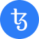Tezos
|
375 | 2.5 mn | 113,249 | 250.99 | 41.45 | 53.79 |
|
Avalanche
|
1,084 | 93.9 mn | 489,311 | 451.39 | 4.76 | 232.42 |
|
Algorand
|
1,190 | 190.0 mn | 512,671 | 430.82 | 2.70 | 245.52 |
비트코인과 이더리움 1.0과 같은 작업 증명형 블록체인들처럼 네트워크가 보다 더 탈중앙화될수 있도록 네트워크가 더 많은 전력을 소비한다고들 오해할 수도 있습니다만. 꼭 그렇지만 않습니다. 2022년 1월에 발표된 CCRI 에너지 효율 보고서 에 따르면, Polkadot은 연간 전력 소비량이 가장 적기 때문에 연간 탄소 배출량도 가장 적었습니다. 이 결과는 총 거래량과 무관하며, 총 전력 소비량을 구하기 위해 CCRI 팀은 먼저 총 노드 수를 곱하기 전에 하드웨어 요구 사항을 기반으로 각 네트워크의 노드당 평균 에너지 소비량을 계산했습니다. 조사된 6개의 블록체인 중 Polkadot은 노드 수가 비교적 적고 노드당 전력 소비가 두 번째로 낮았기 때문에, 가장 친환경적인 블록체인으로 보고됐습니다.
토큰 홀더 정보
9월 28일에는 DOT 보유자 수가 1,000,000명을 돌파했습니다. 그러나 시장 침체 현상은 무시할 수 없었습니다. 2022년 3분기에는 하루 평균 1,695명의 신규 보유자가 있었지만, 이는 2분기(2,135)에 비해 20.61%, 1분기(3,060)에 비해 44.61% 감소했습니다. 9월 30일에는 올해 처음으로 일일 보유자 증가량이 824명의 신규 보유자에서 1,000명 미만으로 감소했습니다. 가격 및 시가총액과 마찬가지로 KSM 보유자 패턴도 DOT와 유사했습니다.
Polkadot & Kusama 계정 리뷰
10월 5일까지 가장 큰 DOT 고래홀더 는 5,861만개의 DOT, 약 3억 7,480만 달러 상당을 보유하고 있었으며, 이 중 47.46%가 스테이킹 되어있었습니다. KSM 고래홀더는 그에 비해 조금 더 겸손한 수준이며, 가장 큰 고래 는 492,990KSM으로 약 2,112만 달러에 달했습니다.
Polkadot 및 Kusama 생태계에 투자한 VC 및 프로젝트 수
투자자의 경우 400개 이상의 벤처 캐피털이 Polkadot 및 Kusama 생태계에 투자했으며 릴레이 체인, 파라체인 및 생태계 DApp들의 토큰을 보유하고 있습니다. DFG와 AU21은 각각 포트폴리오에서 53개 및 40개 정도의 프로젝트를 포함하여 생태계에서 가장 열렬한 지지자였습니다. NGC Ventures, Hypersphere, Illusionist Group 및 CMS Holdings는 모두 30개 이상의 프로젝트에 투자했습니다.
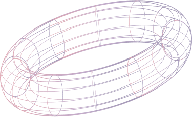
패러체인
2022년 3분기는 9월 30일, OAK Network의 패러체인 옥션 낙찰 로 마무리되어 Polkadot의 28번째 파라체인이 되었습니다. Kusama의 경우 총 54회의 경매가 성공적으로 진행되어, 41개의 파라체인이 자리를 잡았습니다. 합의된 네트워크 간의 통신을 허용하는 소통방식인 XCM이 Polkadot및 Kusama 생태계에 출시된 후, Kusama의 24개 패러체인이 상호간 XCM 채널을 열었으며, 이는 Polkadot상에 발생.된 XCM 전송빈도의 두배를 기록했습니다.
2022년 3분기 Polkadot 및 Kusama Parachains의 XCM 전송 최대값
XCM 전송 가치 측면에서, 상위 6위에는 Moonbeam/Moonriver, Acala/Karura 및 Parallel/Heiko 세 쌍의 자매 네트워크가 차지했으며, 100만 달러 상당의 자산 이 오가며 전체 1위를 차지했음에도 불구하고, 9월 한주간 Parallel은 점차 다른 상위 패러체인들에 뒤처지는 것으로 나타났습니다. 이 중 Moonbeam은 3분기에만총 19,160건의 거래로 5,688만 달러의 전송 가치를, 10,319건의 거래로 3,968만 달러의 전송 가치를 기록했습니다. 네트워크는 또한 1천만 건의 거래 를 기록했습니다. 9월 8일에 고유 주소 300,000개 돌파 후 불과 4일 밖에 걸리지 않았습니다.
Acala는 2,189만 달러 가치 전송 및 2,705만 달러 가치 송금을 기록해 2위를 차지했습니다. 대단하게도, 아칼라는 한 달 동안 네트워크 활동이 중단된 8월 aUSD 디패킹 사태가 있었음에도 불구하고, 전체 3개월 동안의 기록에는 큰 영향을 미치지 않았습니다. 10월 5일, Acala는 공식적으로 모든 기능에 대한 운영을 재개 하여, 4분기에 완벽한 복귀를 약속했습니다.
거버넌스 및 그랜트
거버넌스 2.0 도입 이후 Polkadot Deep Dive H1, 2022 에서 보고서에서도 언급했던, 개빈 우드의 Polkadot Fellowship Manifesto 첫 번째 초안이 9월 26일에 공개됐으며 "핵심 개발자 및 프로토콜 기술 전문가"를 본격적으로 모집한다고 발표했습니다. 거버넌스 2.0에서 Polkadot Fellowship 은 현재 기술 위원회를 대체하고, 본 신규 프로그램을 1) 거버넌스 시스템에 대한 기술 자문 제공, 2) 핵심 프로토콜 유지 및 구축, 3) Polkadot 기술 및 철학 교육 촉진이라는 세 가지 주요 핵심 역할로 정의했습니다. 그러나 Fellowship 프로그램은 네트워크의 정치적 탈중앙화를 촉진하고 보장하되, 커뮤니티의 의지에 반하는 의사 결정이 내려지는 것을 방지하기 위해, 모집된 전문가 그룹에게 어떠한 결정권도 부여되지 않는다고도 강조했습니다.
DOT 트레저리 활동
이번 분기, DOT 트레저리에는 총 30개의 지출 제안을 받았으며, 그
중 24개는 총 439,757.317 DOT, 약 285만 달러를 지원받았습니다.
KSM 트레저리는 또한 22개의 결산된 지출 제안에서 48,038.944 KSM,
약 210만 달러상당의 금액을 지출했습니다.
Polkadot Forum
에서 재무 관리 및 지출 프로세스를 개선하고자 하는
토론이
진행 중입니다. 해당 포럼은 Polkadot의 건설적인 소통의 장으로
자리매김되기 위해 새로 도입된 플랫폼입니다.
범주별 Web3 Foundation 그랜트
DOT 및 KSM 트레저리 외에도 Substrate를 기반으로 구축하고자 하는
프로젝트 팀은 Web3 Foundation Grants Program을 통해 신청할 수
있습니다. 7월 28일, Web3 Foundation 팀에서
발표한 본 보고서
이전까지 접수된 1,054개 프로젝트 중 총 415개의 최종 컨펌된
지원으로. 총400개의 그랜트 프로젝트라는 신기록을 달성했습니다.
그랜트를 받은 프로젝트의 41.5%가 런타임 모듈과 네이티브 네트워크
개발되어 가장 그랜트를 많이 제공하는 분야로 자리 잡았습니다.
이어서 UI 개발 및 개발 도구 분야가 각각 13.2% 및 11.1%를
차지하여 그 다음을 기록했습니다.
디파이 경제
탈중앙화 금융의 약자인 DeFi는 의심할 여지 없이 Polkadot 및
Kusama 생태계에서도
가장 많은 수의 프로젝트
를 기록하여 가장 활발한 부문이었습니다. Parachain 측에서 시장
점유율이 높은 Moonriver, Moonbeam, Acala, Parallel, Astar 및
Karura를 포함한 주요 네트워크들이 가장 많은 파이를 차지했습니다.
Moonbeam/Moonriver 자매 네트워크를 결합한 TVL은 약 1억 2,625만
달러로 전체 TVL의 44.7%를 차지했으며, 이는 Acala와 Karura를
합쳐도 Moonbeam/Moonriver의 전체 TVL 22%로 총 2배 이상의 격차가
나타났습니다.
체인별 TVL
지난
Polkadot Deep Dive 보고서
에서, DeFi 프로젝트를 레이어/패러체인별로 나누고 나열해봤으나,
좀 더 객관적인 비교를 위해, 레이어 상관없이 DeFi 제품을 파고들어
조금 다르게 접근해봤습니다. 이번에는 네 가지 주요 항목으로
DEX(AMM), 대출 및 차용(머니 마켓), Liquid Staking 및
Stablecoin으로 나눠봤습니다. 단, 한 달 간의 활동 중단으로 인해
Acala는 이 섹션에서 제외됩니다.
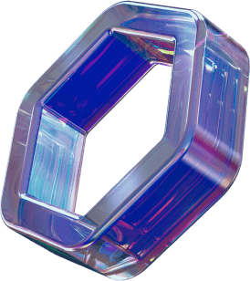
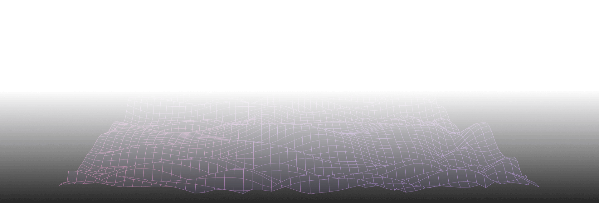
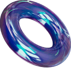
DEX (AMM)
본 섹션에서는 Polkadot 및 Kusama 네이티브 체인 및 멀티체인을 모두 포함해서 총 13개의 DEX를 조사했습니다. 직관성을 높이기 위해 두개의 그룹으로 나눠봤는데요, 3분기 TVL이 약 1,000만 달러 이상인 그룹과 500만 달러 미만인 그룹으로 나눴습니다.
흥미롭게도, Q3의 상위 5개 DEX는 모두 파라체인이 아닌 DApp이었습니다. ArthSwap은 Zenlink와의 경쟁에도 불구하고 Astar Network에서 계속해서 1위 DEX를 유지한 반면, Solarbeam은 차트상 Moonriver Network의 유일한 대표주자로 자리 잡았습니다. Moonbeam 네트워크의 네이티브 DEX인 StellaSwap 및 멀티체인 DEX인 Curve Finance와 비교했을 때, 이 세 개의 프로젝트는 조사 기간 동안 큰 변동성없이 꾸준한 양상을 보였습니다.
평균 TVL이 1천만 달러 이상인 DEX
Nomad 브릿지 해킹사건은 StellaSwap에게 엄천난 악영향을 끼쳤는데요, 8월 1일부터 8월 2일까지 단 하루 만에 TVL이 3,156만 달러에서 1,121만 달러로 약 3배정도 추락했습니다. 그 시점부터 StellaSwap TVL은 약 875만 달러를 맴돌며, 8월 12일 1,346만 달러를 정점으로 9월 6일에는 660만 달러로 바닥을 쳤습니다. 이런 안타까운 사고는 StellaSwap을 8월 중순부터 이전의 무적 1위자리에서 5위로 크게 떨어뜨렸습니다. 재건 프로세스의 일환으로 팀은 10월 9일 커뮤니티 투표 를 통해 통과된, 6개월간 전략적 파밍을 장려하기 위한 합계 7,833,600 GLMR(약 $3.89M)의 Moonbeam 레벨-3 그랜트 를 제안서로 제출했습니다.
또한 StellaSwap은 Moonbeam 네트워크의 의존도가 대부분인 반면, Curve Finance는 Lido의 유동 스테이킹 자산 풀(xcDOT/stDOT)만큼 래핑된 자산에 의존하지 않았기 때문에 Nomad 브릿지 해킹 사태의 영향을 받지 않았았을 뿐만아니라, 멀티체인 DEX는 7월 11일부터 18일까지 단 일주일 만에 TVL을 478만 달러에서 924만 달러로 빠르게 두 배로 늘릴 수 있는 기회를 얻었습니다. Curve Finance는 8월 9일부터 TVL 경쟁력을 지속적으로 주도했으며, 3분기 말까지 TVL은 분기 초에 비해 499% 가량 성장했습니다.
평균 TVL이 5백만 달러 미만인 DEX
낮은 TVL 수치를 유지했던 프로젝드들 중에서 Beamswap은 선두 자리를 그리 오래 유지하지 못했습니다. TVL의 가파른 하락으로 인해 Beamswap은 7월 전반기 이후 Moonbeam의 Beefy와 Karura에 양보해야 했습니다. Beamswap의 DEX TVL은 100만 달러 상당의 GLINT 스테이킹 발표 후, 7월 31일 359만 달러에서 651만 달러로 하루 만에 거의 두 배의 TVL로 뛰었고, 3일 후 다시 408만 달러로 급등했습니다.
Beamswap과 마찬가지로, Moonbeam에 Beefy의 TVL도 8월 1일 $399만에서 8월 2일 $257만으로 35.59%의 극적인 하락을 겪었습니다. 이는 Nomad 사건 이후 패닉 상태에서 스테이킹을 대량 해제했기 때문일 수 있습니다. Moonriver의 자매 네트워크상의 Beefy는 3분기 TVL에 큰 변동이 없었지만, Moonbeam상 Beefy의 TVL은 8일 동안 258.13% 상승하여, 8월 29일 203만 달러에서 9월 6일 524만 달러로 전체 DEX부문에서 비교적 안정적으로 상위 프로젝트로 자리가 유지되었습니다.
Moonbeam의 Beamswap과 Beefy가 Q3의 시작과 끝을 지배했다면, Avaault Finance는 중상위권으로 자리 잡았습니다. 7월 8일에 110만 달러의 미미한 TVL로 출시된 Avaault는 점차 상승하여, 8월 9일의 307만 달러에서, 8월 11일의 610만 달러로 이틀 만에 거의 2배의 인상적인 증가세를 보였습니다. 이번 분기 말까지 언급된 팀들의 TVL이 거의 비슷한 양상을 보이고 있는만큼, 2022년이 끝날 때 즈음, 얼마나 뜨거운 경쟁이 전개될지 주요 관전 포인트가 될 예정입니다.
Lending & Borrowing (머니 마켓)
Moonwell Artemis는 당연하게도 StellaSwap과 같은 종류의 어려움을 겪었습니다. TVL은 3일 만에 8월 1일 $103.04M에서 8월 4일 $22.20M로 78.45% 가량 급락하여 상위 랭킹 중 1위에서 3위로 떨어졌습니다. 프로토콜을 재건하기 위해 Moonwell Artemis는 4,166,400 GLMR(약 $2.08M)에 달하는 Moonbeam 재단의 그랜트 를 신청했고 10월 9일 승인 되었습니다.
이 사건으로 인해, Parallel은 3분기의 마지막 2/3지점에서 대출시장의 경쟁을 주도하여, 8월 6일에는 TVL이 $75M을 넘어섰습니다. 전체 하위 랭킹에서 Starlay는 분기초 TVL은 $13.18M으로 시작했으나, 이후 전체 TVL의 47.79%를 잃었습니다.
대출 및 차용 프로토콜의 TVL
Liquid Staking
Parallel의 주요 상품은 DEX가 아닌, lending 및
borrowing(머니마켓)과 리퀴드 스테이킹이었습니다. 3분기 내내
리퀴드 스테이킹의 TVL은 8월 9일에 $13.35M으로 시작해, 9월
18일에 $12.15M까지 하락한 두 번의 하락을 제외하고는 $15M을
맴돌며 비교적 안정적 상태입니다. 두 번째 하락 후 Parallel의
TVL은 $12M 주변을 맴돌다 Moonbeam의 Lido와 비슷한 수치로
수렴했습니다.
Bifrost는 이번 분기에 6월 29일부터 7월 13일까지
Rainbow Boost 2.0
을 진행했고, 8월 8일부터 8월 23일까지
Rainbow Boost 3.0
을 진행하여, 이번 분기에 리퀴드 스테이킹 인센티브 캠페인을
두 배로 늘렸지만, 3분기랑 하반기에 접어들면서 Moonbeam의
Lido와 경쟁하기에는 역부족이었습니다. Moonbeam의 Lido는
후발주자였음에도 불구하고 출시 첫날 TVL이었던 569만 달러에
비해 무려 216.68% 증가하여 3분기를 마감했습니다. 흥미롭게도
Bifrost의 리퀴드 스테이킹 TVL의 가장 급격한 상승은 캠페인
기간을 지나서야 발생했는데요, 전체 TVL이 7월 21일 576만
달러에서 7월 23일 951만 달러로 가파르게 상승했습니다.
리퀴드 스테이킹 프로토콜의 TVL
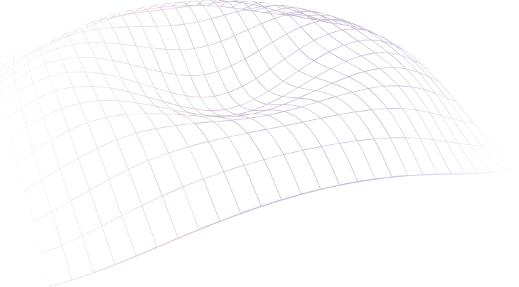
스테이블 코인
Stablecoin 총 발행량
Acala 사건과 상관없이 Karura의 aUSD 발행량은 $3.77M – $4.81M
범위를 벗어나지 않았습니다. 반면, Astar 생태계 댑인 AstridDAO의
스테이블 코인 BAI의 유통량은 더 불안정해졌습니다. 7월 6일 분기를
시작하여 Karura의 aUSD 발행량보다 1.5배 높은 $5.75M으로 BAI
유통량이 점차 감소됐고, 7월 26일에는 공식적으로 경쟁자 타이틀을
내려놓으며, 3개월 동안 BAI는 시가총액의 거의 절반을 잃었습니다.
Acala가 네트워크를 다시 오픈하고 USDC가 Polkadot에서 출시할
계획을 잇따라 발표
하면서, 2022년 말까지 네이티브 스테이블 코인 경쟁이 그 어느
때보다도 더 치열할 것으로 예상됩니다.
Non-fungible token (NFT)
NFT 마켓플레이스
NFT 부문은 이번 분기에 NFT 마켓플레이스, GameFi 및 Metaverse
프로젝트 전반에 걸친 활동으로 활기를 띠었습니다. 출시 한 달 만에
Moonbeam 기반 NFT 마켓플레이스인 Raresama는 2,000,000GLMR(약
927,000달러)의 거래량을
돌파
하여 신기록을 세웠습니다. Raresama 외에도 tofuNFT 및 Moonbeans를
포함한 Moonbeam/Moonriver 생태계의 다른 대표주자들도 놀라운
판매량을 보이고 있습니다.
NFT 마켓플레이스 일일 거래량
Moonbeam Network의 tofuNFT 판매량이 3분기 전체 93일 중 58일동안
63.37%로 가장 높은 판매량을 기록해 일간 볼륨 1위를 차지했습니다.
총 $86,078 상당의 NFT가 Moonbeam의 tofuNFT에서 판매되었으며,
Moonriver의 Moonbeans에서 판매된 금액($41,166)의 두 배 이상,
Singular의 볼륨($22,115)보다 거의 4배가 높습니다.
GameFi
Moonbeam Network에서 매진된 첫 번째 NFT 컬렉션인 GlimmerApes 는 여전히 판매량 1위를 기록했으며, 2위 GLMR Jungle 을 35,000 GLMR(약 14,800달러)이라는 높은 격차로 우위하고 있습니다. 그러나 두 컬렉션 모두 GLMR Apes DAO에서 제작했으며, 후자는 Moonbeam Network의 첫 번째 P2E 게임인 The Great Escape의 일부로, 출시 첫 달 해당 GameFi 프로젝트는 인상적인 이정표를 찍었었습니다. 210명의 고유 플레이어가 약 14,500개의 게임을 플레이했으며, Jungle Bank에서 수집된 8,800GLMB와 5,600GLMB가 소각되었습니다.
클래식 CryptoPunks 와 Bored Ape Yacht Club (BAYC) 이라는 두개의 Moonbeam 버전이 각각 3위와 4위를 차지했습니다. 피트니스 및 라이프스타일 GameFi 앱 MoonFit의 컬렉션인 MoonFit Beast and Beauty는 출시 몇 개월 만에 5위에 올랐습니다. 첫 번째 판매 라운드에서 500개의 NFT가 30분 이내에 39,500 GLMR 가치로 매진되었고 , 두 번째 판매 라운드 에서 1500 NFT가 178,500 GLMR 가치로 매진되어 두 라운드의 기본 시장 판매 수량이 합계 218,000 GLMR로 기록되었습니다. 화이트리스트 무료 민트 컬렉션인 MoonFit Mint Pass도 유통 시장에서 11,478.18GLMR이라는 놀라운 판매량을 기록했습니다.
Moonbeam 네트워크의 역대 NFT 컬렉션 상위 10개
| # | 컬렉션 | 볼륨 |
|---|---|---|
| 1 |
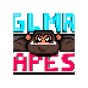
GlimmerApes111 소유자 / 1,001 항목 |
128,353.37
|
| 2 |
GLMR Jungle520 소유자 / 3,333 항목 |
93,229.1
|
| 3 |
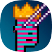
Moonbeam Punks1149 소유자 / 4,200 항목 |
62,531.03
|
| 4 |
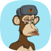
Moonbeam BAYC111 소유자 / 1,001 항목 |
49,189.45
|
| 5 |
MoonFit Beast & Beauty632 소유자 / 2,000 항목 |
41,398.08
|
| 6 |
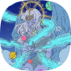
Ultimate Harvest Moon9,504 소유자 / 41,552 항목 |
35,049.84
|
| 7 |
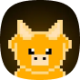
MOONPETS622 소유자 / 5,000 항목 |
30,269.17
|
| 8 |
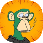
Moonbeam Ape Yatch Club111 소유자 / 1,001 항목 |
16,948
|
| 9 |
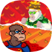
Bunch of Bananas97 소유자 / 125 항목 |
13,077
|
| 10 |
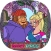
MoonFit Mint Pass1,889 소유자 / 2,998 항목 |
11,478.18
|
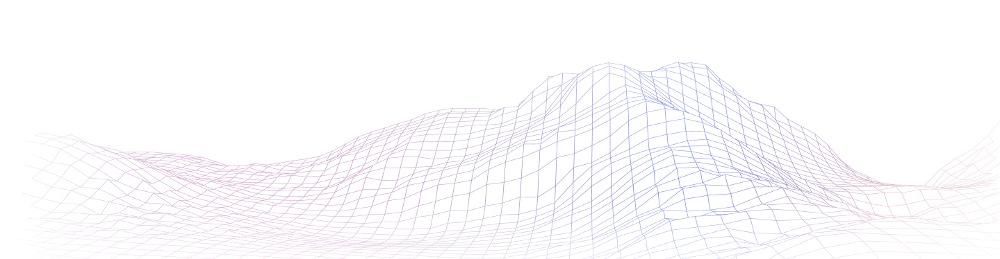

메타버스
GameFi 외에 3분기에 많은 가능성을 보여준 NFT 부문으로
Metaverse가 있습니다. 7월 22일, Polkadot의 Metaverse
패러체인인 Efinity는 Square Enix사와 협력하여 가장 좋아하는
비디오 게임 시리즈 Final Fantasy의 NFT를 출시할 것이라고
발표
했습니다. NFT는 순수한 디지털이 아니지만 Final Fantasy VII를
기반으로 한 실제 액션 피규어 및 트레이딩 카드에 연결된다는
소식입니다.
또 주목할 점으로, Bit.Country는 6월 30일 Alpha Testnet을
시작했으며 첫 2주만에
거의 3,000개
의 메타버스 프로젝트를 모집했으며 약 2백만개의 AlphaNEER가
스테이킹되었습니다. 9월 13일, Bit.Country Pioneer가 Kusama의
52번째 패러체인 슬롯에 낙찰
된 바로 다음날 Bit.Country Pioneer 앱이
출시
되었습니다.
Bit.Country 파이오니어 앱 성능
|
구분
출시일
|
1 일 | 2 일 | 3 일 | 4 일 | 5 일 | 7 일 | 현재까지의 합계 |
|---|---|---|---|---|---|---|---|
| 메타버스 프로젝트 | 29 | 45 | 66 | 89 | 117 | 136 | 210 |
| NFT 컬렉션 | 80 | 117 | 164 | 218 | 282 | 322 | 503 |
| NFT 발행 | 920 | 933 | 1,050 | - | 1,598 | 1,848 | 2,801 |
| NEER 스테이킹 | 3,005,944.98 | 2,340,936.68 | 3,591,736.88 | 3,561,266.38 | 3,532,112.38 | 3,603,074.88 | 4,364,764.61 |
| 소각된 BIT | - | - | 74,499.40 | 96,102.75 | 101,123.79 | 102,812.79 | 204,608.14 |
Alpha Testnet 캠페인의 성공은 Pioneer 앱에 대한 스노우볼 효과를 가져다주었는데요. 출시 9시간 만에, 1백만 NEER 가 스테이킹되었으며, 이 수치는 켐페인 종료 당시 3백만 이상으로 증가했습니다. 첫 주가 끝나갈 무렵 136개의 메타버스 프로젝트와 322개의 NFT 컬렉션이 생성되었으며, 1,848개의 NFT가 발행되고, 360만 NEER가 스테이킹, 10만 BIT 이상이 소각되었습니다. 팀은 최대 5,150 NEER (약 $2,060)에 달하는 경매로 Raw Land Block Sale 이벤트를 이어갔습니다.
RMRK의 상위 메타버스 프로젝트인 Skybreach도 기념비적인 이정표에 도달했습니다. 10월 19일 Skybreach는 1백만 xcRMRK 이상의 볼륨으로 누적 토지 판매에서 14,905개의 플롯을 보고했습니다
DAO
모든 종류의 중앙 기관을 등지고 탄생한 개념인 분산형 자율 조직
(DAO) 은 의사 결정 프로세스가 토큰 소유자에 의해 관리되고 모든
활동이 블록체인을 통해 투명하게 공개되는 엔티티 구조입니다.
다른 생태계와 마찬가지로 DAO는 Polkadot과 Kusama에 없어서는
안될 필수 요소입니다.
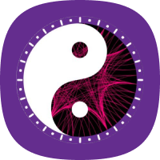
ChaosDAO
Polkadot 및 Kusama 생태계에서 가장 초기에 설립되어 가장 큰 영향력을 행사하고 있는 DAO 중 하나인 ChaosDAO는 7월 13일에 창립 1주년 창립 1주년을 맞았습니다. ChaosDAO는 "양보다 질"을 창립 미션으로 하여, 100% 유기적 성장을 고집해왔습니다: 생태계 내 가장 지식이 풍부한 개개인을 모집하고 연결합니다. DAO는 회원 액세스 및 거버넌스를 위한 NFT 컬렉션 Chaos-DAO Apes 를 출시했었는데요, 10월 24일까지 해당 컬렉션은 109 KSM의 바닥가과 179 KSM의 최고 판매가로 거래량에서 거의 4천 KSM을 기록했습니다. 현재 23명의 서버자 (또는 DAOists)가 ChaosDAO를 운영하고 있으며, 여기에는 생태계의 주목할만한 프로젝트 구성원들이 포함되어 있습니다.
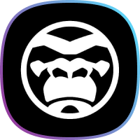
Astar Degens
이름에서 알 수 있듯이 Astar Degens 는 Astar 생태계를 중점으로 둔 커뮤니티 기반 VC형 DAO입니다. 10명의 DAO 위원회가 관리하는 Astar Degens는 2022년 9월 말까지 dApp Staking 보상으로 1백만 ASTR 이상을 받았고 tofuNFT에서 NFT 로열티로 20만 ASTR을 받았습니다. DAO에서 투표권을 얻으려면 Astar Degen Apes NFT 10,000개 중 하나 이상을 소유해야 합니다. 컬렉션 의 누적 거래량은 960만 ASTR이고 가격 하한선은 10월 24일 기준 1,800ASTR입니다.
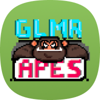
GLMR Apes
공교롭게도 지금까지 논의된 3개의 DAO는 모두 NFT를 관리하기 위해 원숭이 이미지를 사용합니다. 앞서 GameFi 섹션에서 언급했듯이, 1,001개 항목이 포함된 GLMR Apes NFT 컬렉션은 Moonbeam Network에서 처음으로 매진된 사례이며, 여전히 2차 마켓에서 랭킹 1위 자리를 유지하고 있습니다. 운영 중인 정글 위원회는 10명의 구성원으로 구성되어, 절반은 문빔의 코어 팀이고 나머지 절반은 Wise Apes로 분류됩니다.
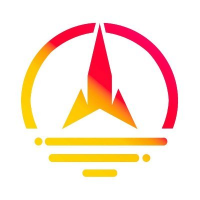
Take Flight Alpha
2022년 1월에 설립된 30명의 회원으로 구성된 TFA DAO Moonbeam 네트워크를 위한 collator 노드를 올리고, 600명 이상의 참가자로 구성된 커뮤니티를 지원하는 데 중점을 둡니다. 이들은 현재 위임자에게 29% APY로 돌려주는 콜레이터 노드에 대해 약 450만 GLMR을 스테이킹하고 있습니다. 2022년 5월, TFA DAO는 참여를 게임화하기 위해 5,000개 항목으로 구성된 MooonPets NFT 컬렉션을 도입하기도 했습니다. 3분기에 MoonPets 보유자의 보고된 유지율은 약 60%였습니다.
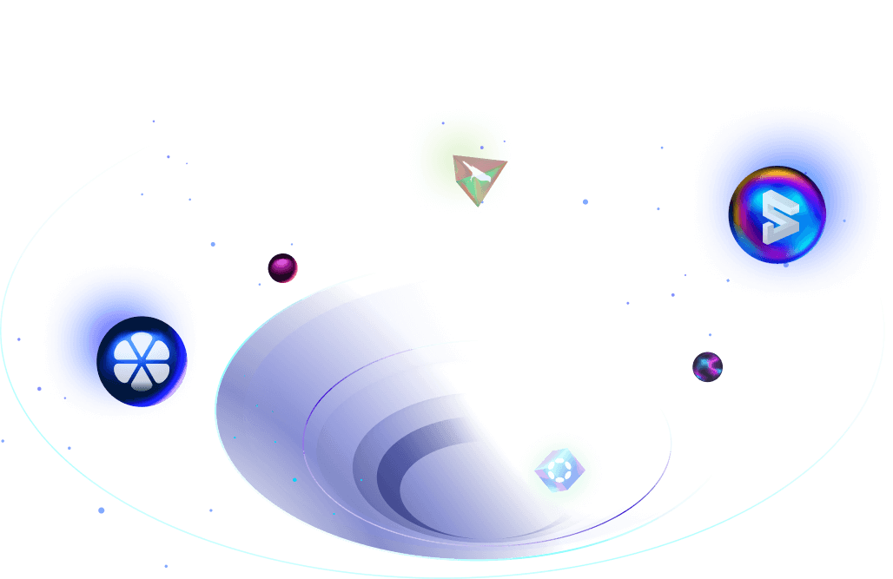
Web3
지갑
Web3 토론에서 non-custodial 지갑 얘기가 빠져서는 안될 것입니다.
Web2 앱에 대한 Google 또는 Facebook 로그인과 유사하게, Web3
지갑은 사용자가 DApp을 통해 Web3 세계에 발을 들이는 효과적인
게이트웨이이자 첫 번째 접점입니다. Polkadot 및 Kusama 생태계에서
지갑은 레거시 지갑, 멀티체인 지갑 및 네이티브 지갑, 이 세 가지
유형으로 나뉩니다.
| 유형 | 레거시 지갑 | 멀티체인 지갑 | 네이티브 지갑 |
|---|---|---|---|
| 예시 | Polkadot {.js}, Fearless Wallet, Polkawallet | Enkrypt, Math Wallet, Rabby | SubWallet, Nova Wallet, Talisman |
| Substrate 호환성 | |||
| EVM 호환성 | |||
| 사용자 친화적인 UX/UI | |||
| Substrate 고유 기능 |
비교 테이블은 특히 사용자 친화적인 UX/UI 및 크라우드론 정보
확인, 스테이킹, XCM 전송 및 라이트 클라이언트와 같은 Substrate
특유 기능 측면에서 네이티브 지갑이 레거시 및 다중 체인 지갑보다
성능이 뛰어나다는 점을 강조하고 있습니다. 따라서 Polkadot 및
Kusama 생태계의 지갑 경쟁은 자연스럽게 SubWallet, Nova Wallet 및
Talisman과 같은 편의성 지갑들의 손으로 크게 넘어간 상태입니다.
Nova Wallet은 모바일 애플리케이션으로 작동하고, Talisman은
브라우저 익스텐션으로 실행되는 반면, SubWallet은 브라우저 및
모바일 애플리케이션을 동시에 출시한 최초의 지갑회사입니다.
SocialFi
유일한 분산형 소셜 미디어 플랫폼인 Subsocial은 3개월 동안 총
1,474개의 게시물과 395개의 스페이스가 생성되어 계속해서 유저층이
단단해지고 있습니다. 10월 25일까지 Subsocial 앱에는 누적으로
거의 25,000개의 게시물과 10,000개 이상의 공간이 생성되었습니다.
Subsocial 생태계에서 사용자에게 더 많은 인센티브를 제공하고
유틸리티를 확장하기 위해, 해당 팀은 RMRK에 아이템 장착이 가능한
로봇 10,000개가 포함된 NFT 컬렉션인
Spacers를 출시했습니다. 이러한 NFT는 Subsocial의 무료 에너지, 무료 .spacer라는 폴카닷
쿠사마 전용 전용 도메인 및 게시물 가시성 증가와 같은 Subsocial의
프리미엄 기능을 활성화하는 VIP 티켓 역할을 합니다.
2022년 3분기, Subsocial 동향
2022년 3분기에는 또 다른 비디오 중심 SocialFi 플랫폼인
Joystream의 등장도 목격하셨을겁니다. 각 비디오가 NFT형태로
Youtube의 Web3 버전처럼 보이지만, Joystream은 3분기 성장폭은
미미했습니다. 분기 초에 비해 총 동영상 수는 7.70% 증가한 반면 총
사용자 수는 9.20% 증가에 그쳤습니다. Polkadot 및 Kusama 생태계의
SocialFi 부문 프로젝트는 활동을 보다 적극적으로 촉진해야 합니다.
그렇지 않으면 다른 생태계의 경쟁자보다 뒤쳐지게 됩니다.
2022년 3분기, Joystream 동향
브릿지
Web3 세계의 급격한 성장으로, 서로 다른 블록체인 간의 통신 및
자산 전송을 허용하는 브릿지에 대한 수요가 급증했는데요.
Polkadot 및 Kusama 생태계에서
XCMP 프로토콜
은 XCM 형식을 통해 레이어-1 체인 간의 원활한 상호 작용을
가능하게 하는 반면, Polkadot 또는 Kusama 파라체인이 다른
생태계에 도달하려는 경우에는 현재로서는 어쩔 수 없이 결국은
브릿지가 필요한 상태입니다. 다음은 Polkadot 및 Kusama
생태계에서 활발히 운영되고 있는 주요 양방향 브릿지 프로젝트를
소개하겠습니다.
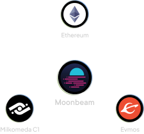
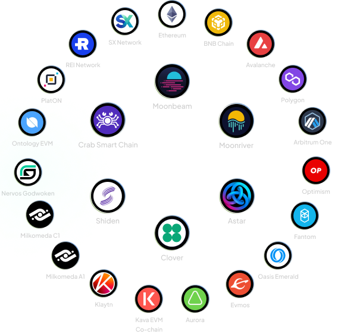
USDT/USDC/DAI/WBTC/WETH/BUSD/BNB와 같은 주요 래핑된 자산 전용.
다른 토큰은 Moonbeam, Moonriver, Shiden 및 Multichain이
지원하는 다른 모든 체인 간에 전송할 수 있습니다.
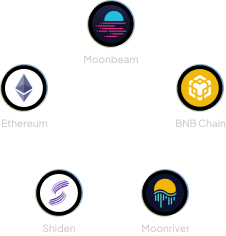
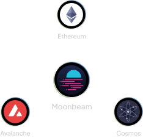
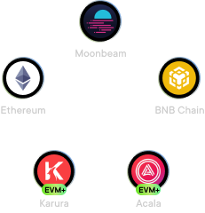
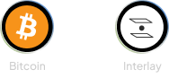
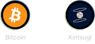
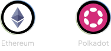
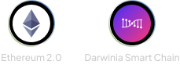
결론
10월 22일, Polkadot과 Parity의 공동 설립자 Gavin Wood는 최고 설계자 직위로 직함을 변경 했고, Parity Technologies의 CEO 자리에서 물러난다고 발표했습니다. 그를 대신하여 Parity 공동 창립자이자 이전에 최고 상업 책임자였던 Björn Wagner씨가 CEO자리를 받게 되었습니다.
이러한 동향은 최종 사용자를 대상으로 하는 생태계 개발 및 성장 확장에 더 많은 관심을 기울일 것이기 때문에 Polkadot의 성장 방향에 긍정적인 변화를 나타낼 것입니다. 다음 달에는 SubWallet이 공동 주최한 베트남 최초의 공식 Polkadot 밋업인 DOTinVietnam및 200명 이상의 개발자와 투자자를 유치한 생태계의 기타 주요 프로젝트와 더 많은 이벤트가 전 세계에서 훨씬 더 큰 규모로 진행될 예정입니다. 따라서 Polkadot의 폭발적 성장은 시간 문제일 뿐입니다.
Get Started With Polkadot
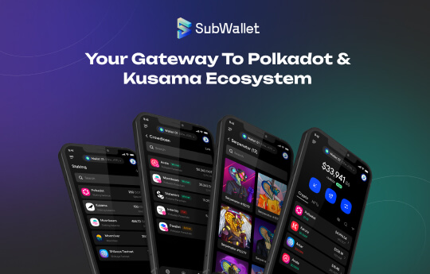
SubWallet
은 Polkadot 및 Kusama 생태계를 위한 사용자 친화적인 Web3
Multiverse Gateway입니다. 모바일 앱과 브라우저 익스텐션으로
제공되는 SubWallet을 사용하면 자산을 쉽게 보내고 받고,
포트폴리오를 관리하고, NFT 자산을 처리하고, 크라우드론 활동을
추적하고, 스테이킹 보상을 관리할 수 있습니다. SubWallet을
사용한다는 것은 Substrate이든 EVM 호환성 DApp이든 Polkadot 및
Kusama 생태계의 광범위한 블록체인 기반 애플리케이션에 연결할 수
있는 가장 간단하고 안전한 방법을 의미합니다. SubWallet을
콜드월렛 및 QR 서명자를 함께 사용하여 자산을 한층 더 안전하게
보호할 수 있습니다.
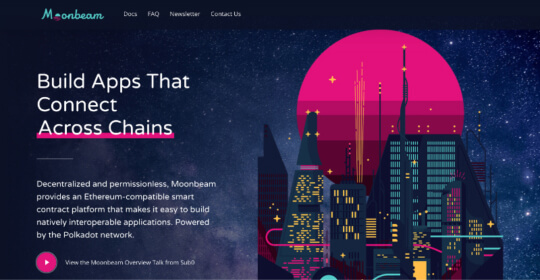
Moonbeam
은 기본적으로 상호 운용 가능한 애플리케이션을 쉽게 구축할 수
있도록 하는 Polkadot 네트워크의 Ethereum 호환 스마트 계약
플랫폼입니다. 이러한 이더리움 호환성을 통해 개발자는 최소한의
코드변경으로도 기존 Solidity 스마트 계약 및 DApp 프론트엔드를
Moonbeam에 배포할 수 있습니다. 80개 이상의 성공적인 DApp을
배출한 Kusama네트워크의 첫번째 패러체인인 Moonriver의 성공에
이어, Moonbeam은 Polkadot 릴레이 체인의 공유 보안과 Polkadot에
연결된 다른 체인과의 통합을 통해 다양한 이점을 누릴 수 있습니다.
Bit.Country
는 사용자에게 12초 만에 Metaverse 프로젝트를 생성할 수 있는
도구를 제공하는 분산 응용 프로그램입니다. 모든 사람, 모든
프로젝트, 브랜드, 비즈니스, 인플루언서 또는 커뮤니티는
Bit.Country를 통해 사용자가 마케팅 캠페인에서 토큰 또는 NFT로
지속적으로 보상을 받는 양방향 몰입형 디지털 세계를 경험하거나
구축할 수 있습니다. 디지털 세계는 복셀, 3D 자산/NFT 및 소품을
배치하여 커뮤니티와 공동 구축하기 위해 세분화할 수 있는 가상
토지에 구축됩니다. Bit.Country는 Kusama(Polkadot 생태계)의
패러체인인 Substrate 기반 Metaverse.Network 블록체인을 기반으로
구축되었습니다. 네트워크 네이티브 통화는 $NEER이고, 게임 내
통화는 $BIT입니다.
About
dotinsights 는 Polkadot 및 Kusama 생태계를 위한 non-custodial 지갑인 SubWallet의 연구 중심의 공시 플랫폼입니다. 데이터 기반 Polkadot Deep Dive 보고서와 Parity Technologies의 지원으로 가장 포괄적이고 최신의 Polkadot 및 Kusama 생태계 Eco-map을 제공함으로써 dotinsights의 비전은 Polkadot의 공식적인 목소리와 신뢰할 수 있는 정보 및 R&D 허브가 되는 것입니다.
기여자 명단
DJ Hà Trang
리서치 총괄
Alex Vu
데이터 엔지니어
Le Bui
웹 디자이너

Dung Nguyen
프론트 개발자
Hieu Dao
Co-founder
& Head of Product
& Head of Product
Frankie Kao
Co-founder
& 크리에이티브 디렉터
& 크리에이티브 디렉터
Thony
Co-founder
& 전략 리드
& 전략 리드
Ryan Dinh
사업개발 매니저
Kate Ha
그로스 리드
Emily Nguyen
그로스 총괄 | Vietnamese Translator

Mabel Nguyen
사업개발 총괄 | Vietnamese Translator
Marco Da Rocha (Pitcoin)
포르투갈어 번역
Eunice Feng
중문 번역
SrSlayer
스페인어 번역
Rudy Wicaksono
인도네시아어 번역
Sang-hyun Rhee
한국어 번역
Takeshi Kuramochi
Japanese Translator